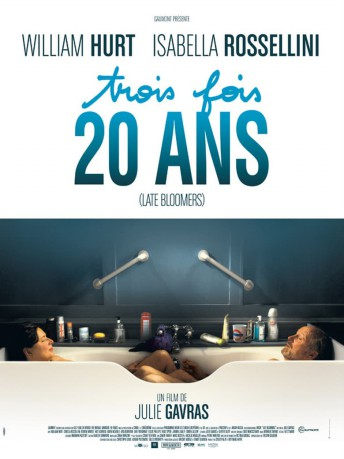

#12005 Late Bloomers
 
 IMDB-Wertung: 5.7 / 10
IMDB-Wertung: 5.7 / 10  Metascore: 53
Metascore: 53 
Adam und Mary sind seit mehr als 30 Jahren verheiratet und haben das gleiche Problem: Sie wollen nicht alt werden. Adam leidet darunter, dass seine Karriere der Vergangenheit angehört. Und Mary spürt, dass ihr Gedächtnis langsam nachlässt. Anstatt sich gegenseitig Halt zu geben, verlieren sie immer mehr den Blick für den anderen.
Jahr: 2011
Dauer: 88 Minuten
FSK: 12
Land: Frankreich Studio: MovienetTonspuren: - , - ,
Untertitel: Deutsch, Englisch,
Auflösung: 1080p (1920x1080) Größe: 6041 MB
Genre: Drama
Regisseur: Julie Gavras
Drehbuch: Olivier Dazat, Julie Gavras, David H. Pickering
Soundtrack: Sodi Marciszewer
Darsteller:
 William Hurt als Adam
William Hurt als Adam Isabella Rossellini als Mary
Isabella Rossellini als Mary- Doreen Mantle als Nora
 Kate Ashfield als Giulia
Kate Ashfield als Giulia Aidan McArdle als James
Aidan McArdle als James- Arta Dobroshi als Maya
 Luke Treadaway als Benjamin
Luke Treadaway als Benjamin Leslie Phillips als Leo
Leslie Phillips als Leo- Hugo Speer als Peter
 Joanna Lumley als Charlotte
Joanna Lumley als Charlotte Simon Callow als Richard
Simon Callow als Richard Nicholas Farrell als Francis
Nicholas Farrell als Francis- Sushil Chudasama als Sushil
- Joanna Bobin als Karen
- Lin Blakley als A Grey Panther
 Gioacchino Jim Cuffaro als Mourner
Gioacchino Jim Cuffaro als Mourner- Stuart Martin als Nurse
 Gino Picciano als European Representative
Gino Picciano als European Representative- Danny Rahim als Leon
- Albert Tang als A Grey Panther
 John Warman als Paramedic
John Warman als Paramedic- Paul Stockman als Elderly Gentleman (uncredited)
- Iona Warne als Carolyn
- Ryan Quartley als Henry
- Hannah Charlton als Girl in Art Gallery
- Christopher Collins als Art gallery scene walk on
- Freddy Downham als Carlos
- Anthony Errington als Architect Intern
- Phoenix James als Art Buyer #1
- Elsie Kelly als A Grey Panther
- Austin Moulton als Marco
- Michael Pourrot als Art buyer
- Kelli White als Tess
- Chris Wilson als Ambulance Paramedic
- Claire Yellowlees als Bar girl
- Russell Honeywell als Charity Worker (uncredited)
- Martin John King als Art Gallery guest (uncredited)
Datei: X:\NEU\Late Bloomers (2011, FSK12, 1920x1080).mkv seit 04.11.2019
 Es gibt insgesamt 187 Filme in der Gruppe 'NEU'
Es gibt insgesamt 187 Filme in der Gruppe 'NEU'